#> MM_medie MM_varianta
#> 2.500 1.917Probabilități și Statistică · Cursul 10
Universitatea din București · Facultatea de Matematică și Informatică · 2026–2027
| Partea | Conținut |
|---|---|
| I | Cadrul estimării punctuale. Metoda momentelor |
| II | Funcția de verosimilitate. Estimatorul de verosimilitate maximă (EVM) |
| III | Invarianță. Proprietăți asimptotice. Aplicații informatice. MM versus EVM. EVM numeric și funcții de pierdere |
| IV | Exerciții rezolvate recapitulative |
La sfârșitul cursului, studenții trebuie să poată:
optimize, optim, uniroot) și interpreta \(-\ell\) ca funcție de pierdere.Fie \(X_1,\dots,X_n\) un eșantion dintr-un model regulat și \(T\) un estimator nedeplasat al lui \(g(\theta)\), cu \(\Var_\theta(T)<\infty\). Atunci \(\displaystyle\Var_\theta(T)\ \ge\ \frac{\big(g'(\theta)\big)^2}{n\,I(\theta)}\) pentru orice \(\theta\in\Theta\).
Exemple: \(\{\Pois(\lambda):\lambda>0\}\) (\(p=1\)); \(\{\Norm(\mu,\sigma^2):\mu\in\R,\sigma^2>0\}\) (\(p=2\)); \(\{\GammaD(\alpha,\lambda):\alpha,\lambda>0\}\) (\(p=2\)).
\(\E_\theta\), \(\Var_\theta\), \(\PP_\theta\): media, varianța sau probabilitatea calculate presupunând că valoarea adevărată a parametrului este \(\theta\). Când nu există pericol de confuzie, indicele \(\theta\) se omite.
Un estimator al parametrului \(\theta\) (sau al unei funcții \(g(\theta)\)) este o statistică \[ \hat\theta_n = T(X_1,\dots,X_n), \] adică o funcție măsurabilă de eșantion care nu depinde de \(\theta\). Valoarea numerică \(T(x_1,\dots,x_n)\), calculată pe datele observate, se numește estimație (sau valoare estimată) a lui \(\theta\).
Fie \(X\sim f(x;\theta)\) și \(k\ge 1\) un întreg astfel încât \(\E_\theta|X|^k<\infty\).
În particular \(\hat\mu_1=\Xbar\) și, din LNM, \(\hat\mu_k\pto\mu_k(\theta)\) când momentul teoretic există.
Dacă \(\theta=(\theta_1,\dots,\theta_p)\), momentele \(\mu_1(\theta),\dots,\mu_p(\theta)\) sunt \(p\) funcții de \(\theta\). Egalăm fiecare moment teoretic cu analogul său empiric.
Estimatorul obținut prin metoda momentelor \(\hat\theta_n^{\mathrm{MM}}\) este soluția (dacă există și este unică) a sistemului \[ \mu_k(\theta)=\hat\mu_k,\qquad k=1,\dots,p . \]
Rețeta practică:
Presupunem că aplicația \(\theta\mapsto(\mu_1(\theta),\dots,\mu_p(\theta))\) este inversabilă, cu inversa \(h\) continuă. Atunci \(\hat\theta_n^{\mathrm{MM}}=h(\hat\mu_1,\dots,\hat\mu_p)\pto\theta\).
Demonstrație. Din Legea Numerelor Mari, \(\hat\mu_k\pto\mu_k(\theta)\) pentru \(k=1,\dots,p\), deci vectorul \((\hat\mu_1,\dots,\hat\mu_p)\) converge în probabilitate către \((\mu_1(\theta),\dots,\mu_p(\theta))\). Cum \(h\) este continuă, teorema aplicației continue dă \[ h(\hat\mu_1,\dots,\hat\mu_p)\pto h(\mu_1(\theta),\dots,\mu_p(\theta))=\theta . \]■
Dacă \(X_i\sim\Bern(p)\), atunci \(\mu_1(p)=\E[X]=p\), iar ecuația \(p=\Xbar\) dă \(\hat p_n^{\mathrm{MM}}=\Xbar\), proporția de succese din eșantion.
Dacă \(X_i\sim\Pois(\lambda)\), atunci \(\mu_1(\lambda)=\lambda\) și \(\hat\lambda_n^{\mathrm{MM}}=\Xbar\). De exemplu, numărul de apeluri primite pe minut la un call-center, înregistrat timp de \(12\) minute, a fost \[ 3,\;1,\;4,\;2,\;0,\;5,\;2,\;3,\;1,\;2,\;4,\;3, \] cu suma \(30\), deci \(\hat\lambda=30/12=2.5\) apeluri pe minut.
#> MM_medie MM_varianta
#> 2.500 1.917Fie \(X_i\sim\Exp(\lambda)\), cu \(\E[X]=1/\lambda\). Ecuația \(1/\lambda=\Xbar\) dă \(\hat\lambda_n^{\mathrm{MM}}=1/\Xbar\). Pentru duratele de funcționare (în mii de ore) ale unor componente electronice \[ 1.2,\;0.4,\;2.7,\;0.9,\;3.5,\;1.6,\;0.2,\;2.1,\;1.0,\;0.8 \] avem \(\xbar=1.44\) și \(\hat\lambda=1/1.44\approx 0.694\) defecte la mia de ore.
Deși \(\Xbar\) este estimator nedeplasat pentru \(1/\lambda\), estimatorul \(1/\Xbar\) este deplasat pentru \(\lambda\) (din inegalitatea lui Jensen, \(\E[1/\Xbar]>1/\E[\Xbar]=\lambda\)).
Fie \(X_i\sim\Norm(\mu,\sigma^2)\) cu ambii parametri necunoscuți. Avem \(\mu_1=\mu\) și \(\mu_2=\sigma^2+\mu^2\), deci sistemul \[ \begin{cases}\mu=\Xbar\\ \sigma^2+\mu^2=\hat\mu_2\end{cases} \quad\Longrightarrow\quad \hat\mu_n^{\mathrm{MM}}=\Xbar,\qquad (\hat\sigma^2_n)^{\mathrm{MM}}=\hat\mu_2-\Xbar^2=\hat\sigma_n^2 . \] Estimatorul varianței este deci \(\hat\sigma_n^2=\frac1n\sum_i(X_i-\Xbar)^2\), care este deplasat: \(\E[\hat\sigma_n^2]=\frac{n-1}{n}\sigma^2\) (Cursul 9); varianța de selecție corectată \(S_n^2=\frac{n}{n-1}\hat\sigma_n^2\) elimină deplasarea.
Pentru înălțimile (în cm) a \(10\) studenți, \[ 172.4,\;168.1,\;175.9,\;181.2,\;169.5,\;177.3,\;173.8,\;166.2,\;179.0,\;174.6, \] obținem \(\hat\mu=173.8\), \(\hat\sigma_n^2=20.98\) (iar \(S_n^2=23.31\)).
Dacă \(X_i\sim\Unif(0,\theta)\), atunci \(\E[X]=\theta/2\), deci \(\hat\theta_n^{\mathrm{MM}}=2\Xbar\). Acest estimator este nedeplasat, dar poate produce valori absurde: pentru eșantionul \[ 0.3,\,0.6,\,0.4,\,3.1,\,0.9,\,1.1 \] obținem \(2\xbar\approx 2.13\), deși am observat valoarea \(3.1>2.13\), incompatibilă cu modelul \(\Unif(0,2.13)\).
Pentru \(X_i\sim\Unif(a,b)\) cu ambele capete necunoscute, \(\E[X]=\frac{a+b}{2}\) și \(\Var(X)=\frac{(b-a)^2}{12}\). Sistemul \[ \frac{a+b}{2}=\Xbar,\qquad \frac{(b-a)^2}{12}=\hat\sigma_n^2 \] dă \(a+b=2\Xbar\) și \(b-a=2\sqrt3\,\hat\sigma_n\) (cu \(b>a\)), deci \[ \hat a_n^{\mathrm{MM}}=\Xbar-\sqrt3\,\hat\sigma_n,\qquad \hat b_n^{\mathrm{MM}}=\Xbar+\sqrt3\,\hat\sigma_n . \]
Fie \(X_i\sim\GammaD(\alpha,\lambda)\), cu densitatea \(f(x;\alpha,\lambda)=\frac{\lambda^\alpha}{\Gamma(\alpha)}x^{\alpha-1}e^{-\lambda x}\), \(x>0\). Știm că \(\E[X]=\alpha/\lambda\) și \(\Var(X)=\alpha/\lambda^2\). Din \[ \frac{\alpha}{\lambda}=\Xbar,\qquad \frac{\alpha}{\lambda^2}=\hat\sigma_n^2 \] împărțind prima ecuație la a doua obținem \(\lambda=\Xbar/\hat\sigma_n^2\), apoi \[ \hat\alpha_n^{\mathrm{MM}}=\frac{\Xbar^2}{\hat\sigma_n^2},\qquad \hat\lambda_n^{\mathrm{MM}}=\frac{\Xbar}{\hat\sigma_n^2}. \] Spre deosebire de EVM (Partea III), estimatorii MM ai repartiției Gamma au formă explicită; de aceea sunt folosiți adesea ca valori de pornire pentru algoritmii numerici.
#> alpha_MM lambda_MM
#> 2.642 1.309Fie \(X_i\sim\Bin(m,p)\), cu \(m\) și \(p\) necunoscuți (de exemplu, numărul de accidente raportate dintr-un număr necunoscut de incidente, fiecare raportat cu probabilitatea \(p\)). Din \(\E[X]=mp\) și \(\Var(X)=mp(1-p)\): \[ mp=\Xbar,\qquad mp(1-p)=\hat\sigma_n^2\quad\Longrightarrow\quad \hat p^{\mathrm{MM}}=1-\frac{\hat\sigma_n^2}{\Xbar},\qquad \hat m^{\mathrm{MM}}=\frac{\Xbar^2}{\Xbar-\hat\sigma_n^2}. \] Dacă \(\hat\sigma_n^2\ge\Xbar\) (posibil prin fluctuații de eșantionare), estimațiile ies din spațiul parametrilor.
#> m_MM p_MM
#> 11.0294 0.4533#> prop_absurd 5% 50% 95%
#> 0.008 7.500 11.200 27.400Metoda momentelor cere existența momentelor teoretice. Pentru repartiția Cauchy, de exemplu, media nu există și metoda nu se poate aplica. De asemenea, estimațiile MM pot ieși din spațiul parametrilor (ca în Exemplul 4).
Întrebare: putem folosi întreaga repartiție, nu doar câteva momente? — Verosimilitatea.
#> [1] 0.0009766 0.0022236 0.0004783Fie \(x_1,\dots,x_n\) valorile observate ale unui eșantion \(X_1,\dots,X_n\) \(\iid\) cu densitatea (funcția de masă) \(f(x;\theta)\). Funcția de verosimilitate este \[ L(\theta)=L(\theta;x_1,\dots,x_n)=\prod_{i=1}^n f(x_i;\theta),\qquad \theta\in\Theta, \] iar funcția de log-verosimilitate este \(\ell(\theta)=\log L(\theta)=\sum_{i=1}^n\log f(x_i;\theta)\).
Verosimilitatea este o funcție de \(\theta\) cu datele fixate; ea nu este o densitate de probabilitate în raport cu \(\theta\) (în general \(\int L(\theta)\dd\theta\ne1\)). Afirmația „\(L(0.7)\) este probabilitatea ca \(p=0.7\)” este greșită; o asemenea interpretare cere cadrul bayesian (Cursul 11).
Factorii din \(L\) care nu depind de \(\theta\) nu influențează poziția maximului. Dacă înregistrăm doar numărul de capete \(K\sim\Bin(10,p)\), verosimilitatea devine \(\binom{10}{7}p^7(1-p)^3\), care diferă doar prin constanta \(\binom{10}{7}=120\). De aceea comparăm verosimilitățile prin rapoarte \(L(\theta_1)/L(\theta_2)\) sau prin verosimilitatea relativă \(L(\theta)/\max L\).
Pentru \(X_i\sim\Bern(p)\) avem \(f(x;p)=p^x(1-p)^{1-x}\), \(x\in\{0,1\}\). Dacă \(k=\sum x_i\) este numărul de succese, \[ L(p)=\prod_{i=1}^n p^{x_i}(1-p)^{1-x_i}=p^{k}(1-p)^{n-k},\qquad \ell(p)=k\log p+(n-k)\log(1-p). \] Figura următoare prezintă verosimilitatea relativă și log-verosimilitatea pentru \(k/n=7/10\) și pentru \(k/n=35/50\).
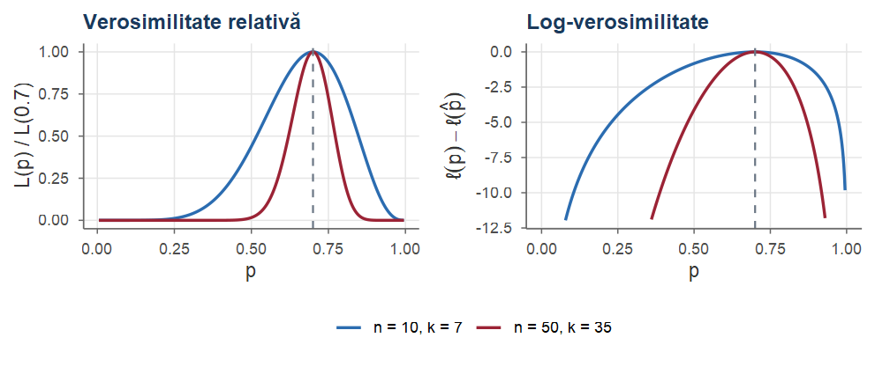
Pentru datele de la call-center din Exemplul 1 (\(n=12\), \(\sum x_i=30\)), cu \(f(x;\lambda)=e^{-\lambda}\lambda^x/x!\), \[ L(\lambda)=\prod_{i=1}^{12}\frac{e^{-\lambda}\lambda^{x_i}}{x_i!}=\frac{e^{-12\lambda}\lambda^{30}}{\prod_i x_i!},\qquad \ell(\lambda)=-12\lambda+30\log\lambda-\sum_{i}\log(x_i!). \]
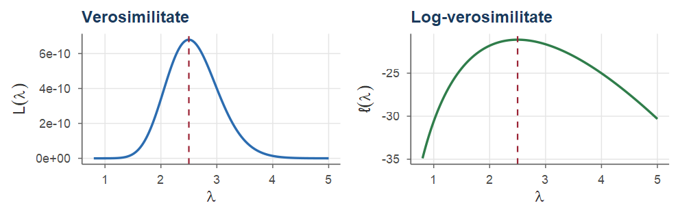
Principiul verosimilității maxime (R. A. Fisher, 1912–1922): alegem valoarea parametrului care face datele observate cât mai probabile.
Se numește estimație de verosimilitate maximă a lui \(\theta\) orice punct de maxim global al funcției de verosimilitate: \[ \hat\theta_n=\argmax_{\theta\in\Theta}L(\theta;x_1,\dots,x_n)=\argmax_{\theta\in\Theta}\ell(\theta). \] Statistica corespunzătoare \(\hat\theta_n=\hat\theta_n(X_1,\dots,X_n)\) se numește estimatorul de verosimilitate maximă (EVM).
Când \(\Theta\) este un interval deschis și \(\ell\) este derivabilă, maximul se găsește de regulă printre soluțiile ecuației de verosimilitate (a scorului) \[ \ell'(\theta)=\frac{\dd}{\dd\theta}\sum_{i=1}^n\log f(x_i;\theta)=0 . \]
Din Exemplul 6, \(\ell(p)=k\log p+(n-k)\log(1-p)\), cu \(k=\sum x_i\). Pentru \(0<k<n\): \[ \ell'(p)=\frac{k}{p}-\frac{n-k}{1-p}=0\iff k(1-p)=(n-k)p\iff p=\frac kn . \] Cum \(\ell''(p)=-\frac{k}{p^2}-\frac{n-k}{(1-p)^2}<0\), funcția \(\ell\) este strict concavă, iar punctul critic este maximul global.
Fie \(X_1,\dots,X_n\sim\Bin(m,p)\) \(\iid\), cu \(m\) cunoscut (de exemplu, numărul de piese defecte în \(n\) loturi de câte \(m\) piese). Atunci \[ \ell(p)=\sum_{i=1}^n\log\binom{m}{x_i}+\Big(\sum_i x_i\Big)\log p+\Big(nm-\sum_i x_i\Big)\log(1-p), \] iar ecuația scorului \(\frac{\sum x_i}{p}-\frac{nm-\sum x_i}{1-p}=0\) dă \[ \hat p_n=\frac{\sum_{i=1}^nX_i}{nm}=\frac{\Xbar}{m}, \] proporția totală de „succese” din cele \(nm\) încercări. Și aici EVM coincide cu estimatorul MM (\(\E[X]=mp\)).
Fie \(X_i\sim\Geom(p)\), numărul de încercări până la primul succes (inclusiv), \(\PP(X=k)=(1-p)^{k-1}p\), \(k\ge1\). Atunci \[ L(p)=\prod_{i=1}^n(1-p)^{x_i-1}p=p^n(1-p)^{\sum x_i-n},\qquad \ell'(p)=\frac np-\frac{\sum x_i-n}{1-p}, \] iar ecuația scorului \(\ell'(p)=0\) are soluția unică \[ \hat p_n=\frac{n}{\sum_{i=1}^n X_i}=\frac{1}{\Xbar}, \] care este maxim, deoarece \(\ell'\) este descrescătoare. Deoarece \(\E[X]=1/p\), metoda momentelor conduce la același estimator.
Pentru \(X_i\sim\Pois(\lambda)\), \(\ell(\lambda)=-n\lambda+\big(\sum x_i\big)\log\lambda-\sum\log(x_i!)\), deci \[ \ell'(\lambda)=-n+\frac{\sum x_i}{\lambda}=0\iff\hat\lambda_n=\Xbar , \] iar \(\ell''(\lambda)=-\sum x_i/\lambda^2<0\) (dacă \(\sum x_i>0\)). Pentru datele call-center-ului, \(\hat\lambda=2.5\).
Pentru \(X_i\sim\Exp(\lambda)\), \(f(x;\lambda)=\lambda e^{-\lambda x}\), \(x>0\), avem \(\ell(\lambda)=n\log\lambda-\lambda\sum x_i\) și \[ \ell'(\lambda)=\frac n\lambda-\sum_{i=1}^nx_i=0\iff \hat\lambda_n=\frac{1}{\Xbar},\qquad \ell''(\lambda)=-\frac{n}{\lambda^2}<0 . \]
Fie \(X_i\sim\Norm(\mu,\sigma^2)\), cu \(\theta=(\mu,\sigma^2)\in\R\times(0,\infty)\). Notăm \(v=\sigma^2\). Atunci \[ \ell(\mu,v)=-\frac n2\log(2\pi)-\frac n2\log v-\frac{1}{2v}\sum_{i=1}^n(x_i-\mu)^2 . \]
\[ \frac{\partial\ell}{\partial\mu}=\frac1v\sum_{i=1}^n(x_i-\mu),\qquad \frac{\partial\ell}{\partial v}=-\frac{n}{2v}+\frac{1}{2v^2}\sum_{i=1}^n(x_i-\mu)^2 . \] Prima ecuație dă \(\hat\mu=\xbar\); înlocuind în a doua, \(\hat v=\frac1n\sum(x_i-\xbar)^2\). Deci \[ \hat\mu_n=\Xbar,\qquad \hat\sigma^2_n=\frac1n\sum_{i=1}^n(X_i-\Xbar)^2 . \]
Dacă media \(\mu\) este cunoscută, EVM pentru \(\sigma^2\) este \(\frac1n\sum_{i=1}^n(X_i-\mu)^2\), care este nedeplasat. Dacă \(\sigma^2\) este cunoscută, EVM pentru \(\mu\) este tot \(\Xbar\).
#> numeric1 numeric2 formula1 formula2
#> 173.80 20.98 173.80 20.98Fie \(X_i\sim\Unif(0,\theta)\), cu \(f(x;\theta)=\frac1\theta\Ind_{[0,\theta]}(x)\). Atunci \[ L(\theta)=\prod_{i=1}^n\frac1\theta\Ind_{\{0\le x_i\le\theta\}}=\frac{1}{\theta^n}\Ind_{\{\theta\ge \max_i x_i\}} , \] deoarece produsul indicatorilor este \(1\) dacă și numai dacă toate observațiile sunt cel mult \(\theta\). Pentru \(\theta<\max_ix_i\) verosimilitatea este nulă, iar pentru \(\theta\ge\max_ix_i\) funcția \(\theta\mapsto\theta^{-n}\) este strict descrescătoare. Maximul se atinge în capătul din stânga al intervalului pe care \(L>0\): \[ \hat\theta_n=X_{(n)}=\max_{1\le i\le n}X_i . \]
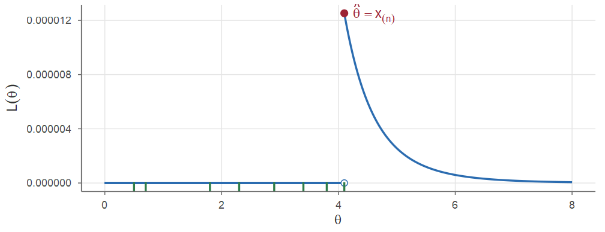
Deseori ne interesează nu \(\theta\), ci o funcție de el: abaterea standard \(\sigma\) în loc de varianță, probabilitatea \(\PP(X=0)=e^{-\lambda}\) în modelul Poisson, mediana \(\log 2/\lambda\) a repartiției exponențiale etc.
Dacă \(\hat\theta_n\) este EVM al lui \(\theta\) și \(g:\Theta\to\R^k\) este o funcție oarecare, atunci \(g(\hat\theta_n)\) este EVM al lui \(\eta=g(\theta)\).
Demonstrație. Dacă \(g\) este bijectivă, parametrizarea prin \(\eta\) are verosimilitatea \(L^*(\eta)=L(g^{-1}(\eta))\), iar \[ \sup_\eta L^*(\eta)=\sup_\theta L(\theta)=L(\hat\theta_n)=L^*(g(\hat\theta_n)), \] deci maximul lui \(L^*\) este în \(g(\hat\theta_n)\).
În cazul general se definește verosimilitatea indusă \[ L^*(\eta)=\sup_{\{\theta:\,g(\theta)=\eta\}}L(\theta); \] atunci \(L^*(\eta)\le L(\hat\theta_n)=L^*(g(\hat\theta_n))\) pentru orice \(\eta\), deci \(g(\hat\theta_n)\) maximizează \(L^*\) (Casella and Berger 2002, Teorema 7.2.10).■
Proprietatea de invarianță ne dă imediat următoarele EVM:
Nedeplasarea nu este invariantă: \(S_n^2\) este nedeplasat pentru \(\sigma^2\), dar \(S_n\) este deplasat pentru \(\sigma\) (din inegalitatea lui Jensen, \(\E[S_n]<\sqrt{\E[S_n^2]}=\sigma\)). Invarianța este o proprietate specifică EVM, pe care estimatorii nedeplasați nu o au.
Fie \(X_1,\dots,X_n\) \(\iid\) cu densitatea \(f(x;\theta)\), \(\theta\in\Theta\subseteq\R\) (interval deschis), astfel încât: suportul \(\{x:f(x;\theta)>0\}\) nu depinde de \(\theta\), \(\theta\mapsto f(x;\theta)\) este de trei ori derivabilă, se poate deriva sub integrală și \(0<I(\theta)<\infty\) (condițiile de regularitate). Atunci:
Nu demonstrăm teorema (Casella and Berger 2002, secț. 10.1; Wasserman 2004, cap. 9), dar schițăm ideea pentru punctul 2.
Dezvoltăm funcția scor în jurul lui \(\theta\): \[ 0=\ell'(\hat\theta_n)\approx\ell'(\theta)+(\hat\theta_n-\theta)\ell''(\theta) \quad\Longrightarrow\quad \sqrt n(\hat\theta_n-\theta)\approx\frac{\frac{1}{\sqrt n}\ell'(\theta)}{-\frac1n\ell''(\theta)} . \]
Pentru \(\Bern(p)\): \(\log f(x;p)=x\log p+(1-x)\log(1-p)\), \(\frac{\partial^2}{\partial p^2}\log f=-\frac{x}{p^2}-\frac{1-x}{(1-p)^2}\), deci \[ I(p)=\frac{p}{p^2}+\frac{1-p}{(1-p)^2}=\frac{1}{p(1-p)},\qquad \hat p_n\approx\Norm\Big(p,\frac{p(1-p)}{n}\Big). \] Pentru \(\Pois(\lambda)\): \(\frac{\partial^2}{\partial\lambda^2}\log f=-x/\lambda^2\), deci \(I(\lambda)=1/\lambda\) și \(\hat\lambda_n\approx\Norm(\lambda,\lambda/n)\). Pentru \(\Exp(\lambda)\): \(\frac{\partial^2}{\partial\lambda^2}\log f=-1/\lambda^2\), \(I(\lambda)=1/\lambda^2\) și \(\hat\lambda_n=1/\Xbar\approx\Norm(\lambda,\lambda^2/n)\).
Pentru datele call-center-ului, \(\widehat{\mathrm{se}}(\hat\lambda)=\sqrt{\hat\lambda/n}=\sqrt{2.5/12}\approx0.456\).
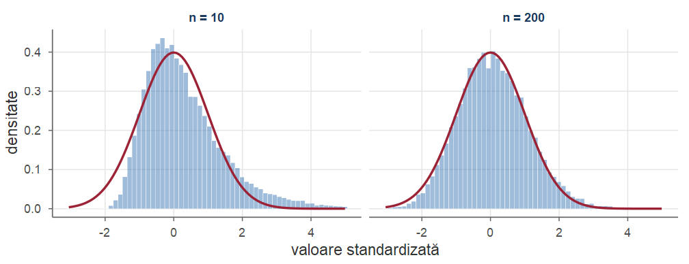
Histograma este asimetrică pentru \(n=10\), dar foarte apropiată de densitatea \(\Norm(0,1)\) pentru \(n=200\).
Pentru \(\Unif(0,\theta)\) suportul depinde de \(\theta\) și teorema nu se aplică: EVM \(X_{(n)}\) converge către \(\theta\) cu viteza \(1/n\), nu \(1/\sqrt n\). Mai precis, \[ \PP\big(n(\theta-X_{(n)})>t\big)=\Big(1-\frac{t}{n\theta}\Big)^n\to e^{-t/\theta}, \] deci \(n(\theta-X_{(n)})\dto\Exp(1/\theta)\) — o repartiție limită exponențială, nu normală.
Combinând invarianța cu metoda delta (Wasserman 2004, cap. 9), pentru \(g\) derivabilă cu \(g'(\theta)\ne0\): \[ \sqrt n\big(g(\hat\theta_n)-g(\theta)\big)\dto\Norm\big(0,g'(\theta)^2/I(\theta)\big). \] De exemplu, \(e^{-\Xbar}\) estimează \(e^{-\lambda}\) (Poisson) cu varianța asimptotică \(e^{-2\lambda}\lambda/n\).
O rețea este un graf. Modelul cel mai simplu: muchiile apar independent, cu aceeași probabilitate \(p\).
În graful aleator \(G(m,p)\) cu \(m\) noduri, fiecare dintre cele \(N=\binom m2\) perechi de noduri este unită printr-o muchie cu probabilitatea \(p\), independent de celelalte perechi. Matricea de adiacență \(A=(A_{ij})\) este simetrică, cu \(A_{ii}=0\) și \(A_{ij}=A_{ji}\sim\Bern(p)\) pentru \(i<j\).
Simulăm un graf \(G(100,\,0.05)\): \(m=100\) de noduri, \(N=4950\) de perechi.
set.seed(2); noduri <- 100; perechi <- choose(noduri, 2)
A <- matrix(0, noduri, noduri) # matricea de adiacență
A[upper.tri(A)] <- rbinom(perechi, 1, 0.05) # muchiile i < j
A <- A + t(A) # graf neorientat
muchii <- sum(A) / 2; p_hat <- muchii / perechi # M și EVM
c(p_hat = p_hat, se = sqrt(p_hat * (1 - p_hat) / perechi))#> p_hat se
#> 0.052525 0.003171Disc luminos (\(\lambda=1.2\)), bandă slabă (\(\lambda=0.6\)), fond întunecat (\(\lambda=0.2\)); \(K=50\) de cadre.
Rădăcina erorii pătratice medii:
Eroarea scade de aproape \(\sqrt{50}\approx7.1\) ori; banda devine vizibilă.
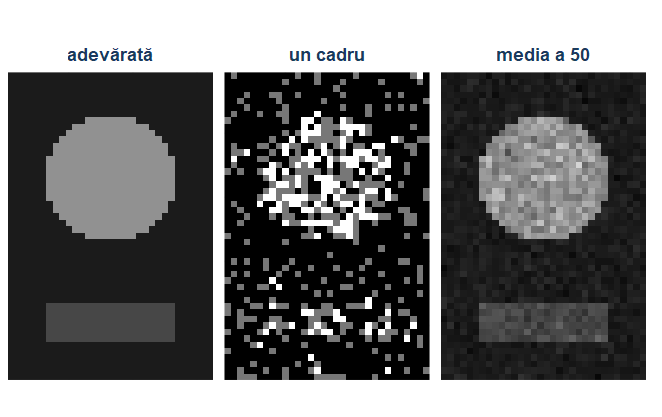
Pentru multe repartiții uzuale (Bernoulli, binomială, geometrică, Poisson, exponențială, normală) cele două metode conduc la aceiași estimatori. Diferențele apar în modele mai complicate; exemplul clasic este repartiția uniformă.
Considerăm trei estimatori ai lui \(\theta\): \[ T_1=2\Xbar\ \text{(MM)},\qquad T_2=X_{(n)}\ \text{(EVM)},\qquad T_3=\frac{n+1}{n}X_{(n)}\ \text{(EVM corectat)} . \] Repartiția maximului: \(\PP(X_{(n)}\le t)=(t/\theta)^n\), \(0\le t\le\theta\), deci \(X_{(n)}\) are densitatea \(nt^{n-1}/\theta^n\) și \[ \E[X_{(n)}]=\frac{n}{n+1}\theta,\qquad \E[X_{(n)}^2]=\frac{n}{n+2}\theta^2,\qquad \Var(X_{(n)})=\frac{n\theta^2}{(n+1)^2(n+2)} . \]
Pentru \(n=10\), \(\theta=1\): \(0.0333\), \(0.0152\), \(0.0083\). EPM-ul estimatorilor bazați pe maxim descrește ca \(1/n^2\), al lui \(T_1\) doar ca \(1/n\).
#> EPM_T1 EPM_T2 EPM_T3
#> 0.0333 0.0151 0.0083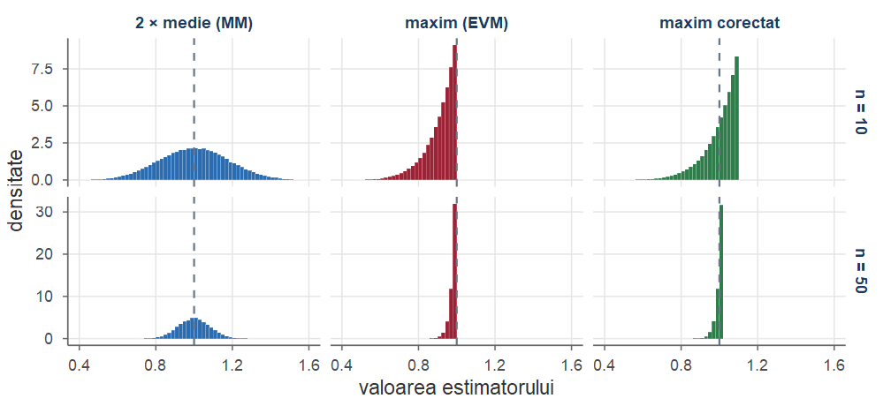
| Criteriu | Metoda momentelor | Metoda verosimilității maxime |
|---|---|---|
| Informație folosită | câteva momente | întreaga repartiție |
| Calcul | de regulă explicit, simplu | ecuații uneori fără soluție explicită |
| Existență | cere existența momentelor | cere doar densitatea |
| Valori admisibile | pot ieși din \(\Theta\) | întotdeauna în \(\Theta\) |
| Invarianță la \(g(\theta)\) | nu | da |
| Eficiență asimptotică | în general nu | da (modele regulate) |
În practică, cele două metode se completează: estimațiile MM, ușor de calculat, servesc drept puncte de pornire pentru maximizarea numerică a verosimilității.
optimize(f, interval, maximum = TRUE) — optimizare unidimensională pe un interval;optim(par, fn, ...) — optimizare multidimensională; implicit minimizează, deci îi dăm \(-\ell\) (log-verosimilitatea negativă); cu hessian = TRUE întoarce și hessiana lui \(-\ell\) în punctul de optim, adică informația observată, a cărei inversă aproximează matricea de covarianță a EVM;uniroot(g, interval) — rezolvarea unei ecuații \(g(\theta)=0\) într-o variabilă.optimize intervalul poate fi \((0,1)\): capetele nu sunt evaluate.optim minimizează, deci îi dăm \(-\ell\). În învățarea automată, un model este „antrenat” minimizând o funcție de pierdere (loss) calculată pe date.
Pentru observațiile independente \(y_1,\dots,y_n\), unde \(Y_i\) are densitatea (funcția de masă) \(f_i(y;\theta)\), \[ J(\theta)=-\ell(\theta)=\sum_{i=1}^n\big(-\log f_i(y_i;\theta)\big),\qquad \hat\theta_n=\argmin_{\theta\in\Theta}J(\theta). \] Termenul \(-\log f_i(y_i;\theta)\) este pierderea observației \(i\): mică atunci când modelul îi dă observației o probabilitate mare.
\(200\) de observații Bernoulli simulate și înălțimile y ale celor \(10\) studenți:
set.seed(3); yb <- rbinom(200, 1, 0.3) # entropia încrucișată medie:
logloss <- function(p) -mean(yb * log(p) + (1 - yb) * log(1 - p))
sse <- function(mu) sum((y - mu)^2) # suma pătratelor erorilor
rez <- rbind(p = c(optimize(logloss, c(0, 1))$minimum, mean(yb)),
mu = c(optimize(sse, c(150, 200))$minimum, mean(y)))
colnames(rez) <- c("numeric", "formula"); rez#> numeric formula
#> p 0.295 0.295
#> mu 173.800 173.800Pentru \(X_i\sim\GammaD(\alpha,\lambda)\), \[ \ell(\alpha,\lambda)=n\alpha\log\lambda-n\log\Gamma(\alpha)+(\alpha-1)\sum_{i=1}^n\log x_i-\lambda\sum_{i=1}^nx_i . \] Ecuațiile de verosimilitate sunt \[ \frac{\partial\ell}{\partial\lambda}=\frac{n\alpha}{\lambda}-\sum x_i=0,\qquad \frac{\partial\ell}{\partial\alpha}=n\log\lambda-n\psi(\alpha)+\sum\log x_i=0, \] unde \(\psi=\Gamma'/\Gamma\) este funcția digamma. Din prima ecuație \(\lambda=\alpha/\xbar\); înlocuind în a doua: \[ \log\alpha-\psi(\alpha)=\log\xbar-\frac1n\sum_{i=1}^n\log x_i . \]
uniroot:optim#> [1] 2.954 1.464#> [1] 0.6268 0.3385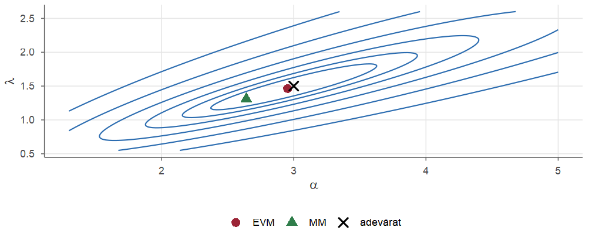
Forma alungită a curbelor arată corelația puternică dintre \(\hat\alpha\) și \(\hat\lambda\).
Fie \(X_i\) cu densitatea Cauchy de locație \(\theta\), \(f(x;\theta)=\frac{1}{\pi[1+(x-\theta)^2]}\). Media nu există, deci metoda momentelor nu se aplică. Log-verosimilitatea este \[ \ell(\theta)=-n\log\pi-\sum_{i=1}^n\log\big(1+(x_i-\theta)^2\big), \] iar ecuația scorului \[ \sum_{i=1}^n\frac{2(x_i-\theta)}{1+(x_i-\theta)^2}=0 \] este echivalentă cu o ecuație polinomială de grad \(2n-1\), care poate avea mai multe rădăcini. Pentru eșantionul \(-2.1,\;0.4,\;1.3,\;1.9,\;7.2,\;8.1\), log-verosimilitatea are două maxime locale.
#> start_mediana start_7 optimize
#> 1.286 7.092 1.286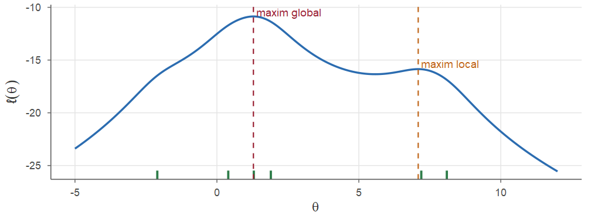
Lecția practică: inspectăm graficul lui \(\ell\) și încercăm mai multe puncte de pornire, alese cu bun-simț (aici mediana este o alegere robustă).
Pentru \(\ell'(\theta)=\sum_i\frac{2(x_i-\theta)}{1+(x_i-\theta)^2}\) și \(\ell''(\theta)=\sum_i\frac{2\,[(x_i-\theta)^2-1]}{[1+(x_i-\theta)^2]^2}\):
#> start_mediana start_5 l2_in_5.577
#> 1.286 5.577 0.756Recomandări practice:
log = TRUE al funcțiilor d... (de exemplu dgamma(x, a, b, log = TRUE)), mai stabil decât log(dgamma(...));method = "L-BFGS-B" cu limite inferioare sau reparametrizați (\(\theta=e^{\eta}\), cu \(\eta\in\R\) — invarianța EVM garantează că rezultatul este același);fit$convergence == 0) și desenați \(\ell\).Fie \(X_1,\dots,X_n\) un eșantion din repartiția cu densitatea \(f(x;\theta)=\theta x^{\theta-1}\), \(0<x<1\), \(\theta>0\).
Densitatea Rayleigh este \(f(x;\theta)=\frac{x}{\theta}e^{-x^2/(2\theta)}\), \(x>0\), \(\theta>0\).
#> MM EVM
#> media 2.026 1.9983
#> varianta 0.224 0.2004
#> marginea_CR 0.200 0.2000Un student încearcă să rezolve o problemă de tip grilă până nimerește răspunsul corect; numărul de încercări necesare în \(10\) sesiuni a fost \[ 3,\;1,\;5,\;2,\;2,\;4,\;1,\;6,\;2,\;4 . \] Presupunând un model \(\Geom(p)\), estimați \(p\) și probabilitatea ca studentul să aibă nevoie de mai mult de două încercări.
Conform Exemplului 10, EVM este \(\hat p=1/\xbar\). Avem \(\sum x_i=30\), \(\xbar=3\), deci \(\hat p=1/3\). Probabilitatea cerută este \(\PP(X>2)=\PP(\text{primele două încercări sunt eșecuri})=(1-p)^2\). Din invarianța EVM (Teorema 7), EVM al acestei probabilități este \((1-\hat p)^2=(2/3)^2=4/9\approx0.444\).
Fie \(X_1,\dots,X_n\) cu densitatea \(f(x;\theta)=e^{-(x-\theta)}\), \(x\ge\theta\) (timpul de răspuns al unui server, cu o întârziere minimă necunoscută \(\theta\)). Determinați estimatorii MM și EVM și calculați-i pentru datele \[ 5.30,\;6.10,\;5.08,\;7.40,\;5.60,\;5.90,\;6.80,\;5.20 . \]
MM. \(X=\theta+Y\) cu \(Y\sim\Exp(1)\), deci \(\E[X]=\theta+1\) și \(\hat\theta^{\mathrm{MM}}_n=\Xbar-1\).
EVM. Suportul depinde de \(\theta\): \[ L(\theta)=\prod_{i=1}^ne^{-(x_i-\theta)}\Ind_{\{x_i\ge\theta\}}=e^{n\theta-\sum x_i}\,\Ind_{\{\theta\le x_{(1)}\}} . \] Pentru \(\theta\le x_{(1)}\) funcția \(e^{n\theta}\) este strict crescătoare, iar pentru \(\theta>x_{(1)}\) verosimilitatea este nulă. Maximul este în \(\hat\theta_n=X_{(1)}=\min_iX_i\) (ca la \(\Unif(0,\theta)\), ecuația scorului \(\ell'(\theta)=n=0\) nu are soluție).
Pentru date: \(\xbar=5.9225\), deci \(\hat\theta^{\mathrm{MM}}=4.9225\), iar \(\hat\theta^{\mathrm{EVM}}=x_{(1)}=5.08\). Estimația MM este compatibilă cu modelul, dar ignoră informația foarte precisă conținută de minim.
Fie \(X_1,\dots,X_n\) cu densitatea Laplace \(f(x;\theta)=\frac12e^{-|x-\theta|}\), \(x\in\R\). Arătați că orice mediană a eșantionului este EVM al lui \(\theta\) și calculați-l pentru \[ 2.1,\;-0.4,\;1.7,\;3.2,\;0.9,\;1.4,\;2.8 . \]
\(\ell(\theta)=-n\log2-\sum_{i=1}^n|x_i-\theta|\), deci maximizarea lui \(\ell\) înseamnă minimizarea funcției \(h(\theta)=\sum_i|x_i-\theta|\). Funcția \(h\) este convexă și liniară pe porțiuni; pentru \(\theta\) diferit de observații, \[ h'(\theta)=\#\{i:x_i<\theta\}-\#\{i:x_i>\theta\}, \] adică numărul observațiilor aflate la stânga lui \(\theta\) minus numărul celor de la dreapta. Ea este negativă cât timp mai puțin de jumătate din observații sunt la stânga lui \(\theta\) și pozitivă când mai mult de jumătate sunt la stânga. Deci \(h\) este minimă în mediana eșantionului (pentru \(n\) par, în orice punct dintre cele două valori centrale).
Valorile ordonate: \(-0.4,\;0.9,\;1.4,\;1.7,\;2.1,\;2.8,\;3.2\), deci \(\hat\theta=x_{(4)}=1.7\). (Metoda momentelor, cu \(\E[X]=\theta\), ar da \(\xbar\approx1.671\).)
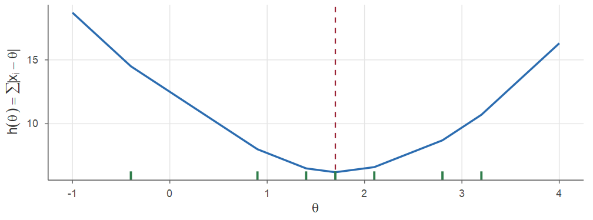
Fie \(X_1,\dots,X_n\sim\Unif(a,b)\), cu \(a<b\) necunoscuți. Determinați EVM și comparați-l cu estimatorul MM pentru datele \[ 2.3,\;0.7,\;4.1,\;3.4,\;1.8,\;2.9,\;0.5,\;3.8 . \]
\(L(a,b)=(b-a)^{-n}\Ind_{\{a\le x_{(1)}\}}\Ind_{\{b\ge x_{(n)}\}}\). Pe mulțimea pe care \(L>0\), funcția \((b-a)^{-n}\) este maximă când lungimea \(b-a\) este minimă, adică \(a\) cât mai mare și \(b\) cât mai mic: \(\hat a=X_{(1)}\), \(\hat b=X_{(n)}\). Pentru date, \(\hat a=0.5\), \(\hat b=4.1\).
Estimatorii MM (Exemplul 4) sunt \(\Xbar\mp\sqrt3\,\hat\sigma_n\). Avem \(\xbar=2.4375\), \(\hat\sigma_n\approx1.2727\), deci \(\hat a^{\mathrm{MM}}\approx0.233\) și \(\hat b^{\mathrm{MM}}\approx4.642\). Aici estimațiile MM sunt compatibile cu datele (\(0.233<0.5\), \(4.642>4.1\)), dar, ca în Exemplul 18, sunt mult mai variabile decât EVM.
Pentru înălțimile din Exemplul 3, presupuse \(\Norm(\mu,\sigma^2)\), estimați proporția studenților cu înălțimea peste \(180\) cm.
Indicație: scrieți proporția ca funcție de parametri, \(g(\mu,\sigma^2)=\PP(X>180)\), și folosiți invarianța EVM.
Proporția căutată este \(g(\mu,\sigma^2)=\PP(X>180)=1-\Phi\big(\frac{180-\mu}{\sigma}\big)\). EVM-urile sunt \(\hat\mu=173.8\) și \(\hat\sigma=\sqrt{20.98}\approx4.580\). Din invarianța EVM, \[ \widehat{\PP(X>180)}=1-\Phi\Big(\frac{180-173.8}{4.580}\Big)=1-\Phi(1.354)\approx0.088 . \]
Pentru a estima numărul \(N\) de pești dintr-un lac, se capturează \(K=50\) de pești, se marchează și se eliberează. Mai târziu se capturează \(n=40\) de pești, dintre care \(k=7\) sunt marcați. Determinați EVM al lui \(N\).
Indicație: numărul de pești marcați din a doua captură are repartiția \(\HGeom(N,K,n)\); parametrul \(N\) este întreg, deci nu derivăm, ci studiem raportul \(L(N)/L(N-1)\).
Verosimilitatea este \[ L(N)=\frac{\binom{K}{k}\binom{N-K}{n-k}}{\binom{N}{n}},\qquad N\ge K+n-k . \] După simplificări, \[ \frac{L(N)}{L(N-1)}=\frac{(N-K)(N-n)}{N(N-K-n+k)} . \] Raportul este \(\ge1\) dacă și numai dacă \((N-K)(N-n)\ge N(N-K-n+k)\), adică \(Kn\ge Nk\), i.e. \(N\le Kn/k\). Așadar \(L\) crește până la \(\lfloor Kn/k\rfloor\) și apoi descrește: \[ \hat N=\Big\lfloor\frac{Kn}{k}\Big\rfloor=\Big\lfloor\frac{50\cdot40}{7}\Big\rfloor=\lfloor285.71\rfloor=285 . \]
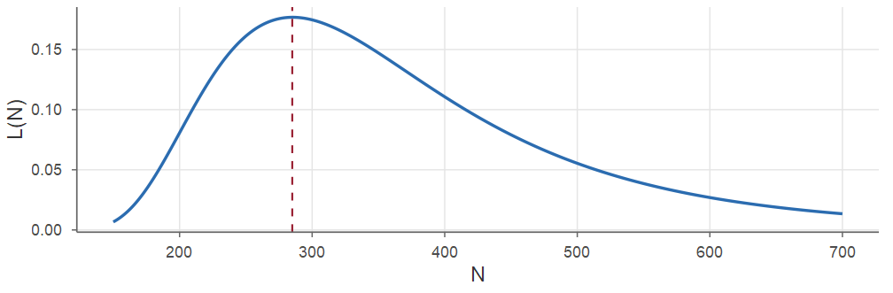
Sub echilibrul Hardy–Weinberg, cele trei genotipuri \(MM\), \(MN\), \(NN\) ale unei gene apar cu probabilitățile \(\theta^2\), \(2\theta(1-\theta)\), \((1-\theta)^2\). Într-un eșantion de \(1029\) de persoane s-au observat \(n_1=342\), \(n_2=500\), \(n_3=187\) persoane cu genotipurile respective. Determinați EVM al lui \(\theta\) și frecvențele așteptate.
Verosimilitatea (multinomială) este, până la o constantă, \[ L(\theta)=(\theta^2)^{n_1}\,\big(2\theta(1-\theta)\big)^{n_2}\,\big((1-\theta)^2\big)^{n_3}\propto\theta^{2n_1+n_2}(1-\theta)^{n_2+2n_3} . \] Aceasta are forma verosimilității Bernoulli cu \(2n_1+n_2\) „succese” din \(2n\) încercări (numărăm alelele \(M\) din cele \(2n\) alele), deci \[ \hat\theta=\frac{2n_1+n_2}{2n}=\frac{684+500}{2058}\approx0.5753 . \] Frecvențele așteptate: \(n\hat\theta^2\approx340.6\), \(2n\hat\theta(1-\hat\theta)\approx502.8\) și \(n(1-\hat\theta)^2\approx185.6\), foarte apropiate de cele observate. Eroarea standard: \(\sqrt{\hat\theta(1-\hat\theta)/(2n)}\approx0.011\).
#> theta se
#> 0.5753 0.0109#> [,1] [,2] [,3]
#> observate 342.0 500.0 187.0
#> asteptate 340.6 502.8 185.6Fie \(X_1,\dots,X_{50}\sim\Exp(\lambda)\) cu \(\lambda=2\). Folosind normalitatea asimptotică a EVM, aproximați \(\PP(|\hat\lambda_n-\lambda|>0.5)\); comparați cu valoarea exactă și cu o simulare.
Din Exemplul 15, \(I(\lambda)=1/\lambda^2\), deci \(\hat\lambda_n\approx\Norm(\lambda,\lambda^2/n)\), cu abaterea standard \(2/\sqrt{50}\approx0.2828\). Atunci \[ \PP(|\hat\lambda_n-2|>0.5)\approx2\Big(1-\Phi\Big(\frac{0.5}{0.2828}\Big)\Big)=2(1-\Phi(1.768))\approx0.077 . \] Valoarea exactă se obține din \(\Xbar\sim\GammaD(n,n\lambda)\): \(\PP(\hat\lambda_n>2.5)+\PP(\hat\lambda_n<1.5)=\PP(\Xbar<0.4)+\PP(\Xbar>2/3)\).
n <- 50; lambda <- 2
aprox <- 2 * (1 - pnorm(0.5 / (lambda / sqrt(n))))
# exact: media de selecție are repartiția Gamma(n, n * lambda)
exact <- pgamma(0.4, n, n * lambda) + 1 - pgamma(2/3, n, n * lambda)
set.seed(1); lh <- 1 / replicate(1e5, mean(rexp(n, lambda)))
sim <- mean(abs(lh - lambda) > 0.5)
c(aproximare = aprox, exact = exact, simulare = sim)#> aproximare exact simulare
#> 0.07710 0.08487 0.08468Densitatea Weibull cu parametrul de formă \(k>0\) și parametrul de scală \(s>0\) este \(f(x;k,s)=\frac ks\big(\frac xs\big)^{k-1}e^{-(x/s)^k}\), \(x>0\). Duratele de viață (în ani) ale unor baterii au fost \[ \begin{aligned} &5.52,\,1.70,\,3.90,\,4.25,\,2.74,\,2.73,\,6.01,\,4.47,\\ &2.87,\,2.60,\,3.20,\,3.24,\,3.09,\,2.97,\,1.35 . \end{aligned} \]
#> k s
#> 2.940 3.787uniroot, apoi \(\hat s=\big(\frac1n\sum_ix_i^{\hat k}\big)^{1/\hat k}\).optim#> [,1] [,2]
#> EVM 2.9397 3.787
#> se 0.5725 0.352uniroot pe ecuația redusă și optim pe \(-\ell\)) dau același rezultat.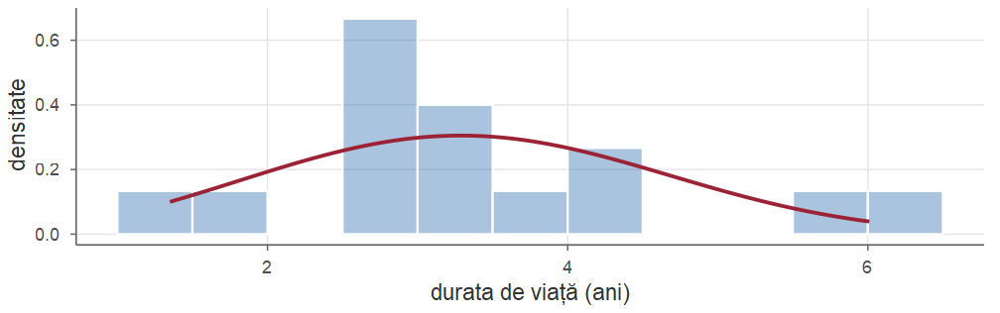
Pentru un eșantion \(X_1,\dots,X_n\) \(\iid\) \(f(x;\theta)\):
Proprietăți și calcul numeric:
optimize, optim (minimizează \(-\ell\); hessian = TRUE dă informația observată), uniroot; porniți din estimațiile MM și verificați graficul lui \(\ell\); \(-\ell\) este funcția de pierdere (entropia încrucișată pentru observații Bernoulli, suma pătratelor erorilor pentru observații normale).optimize. Comparați cu media și mediana eșantionului.digamma și trigamma). Câte iterații sunt necesare pentru o precizie de \(10^{-8}\)?Cursul următor: statistica bayesiană — parametrul ca variabilă aleatoare.
Probabilități și Statistică · Cursul 10 — Metode de estimare punctuală